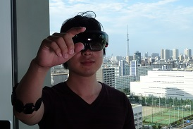
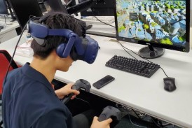
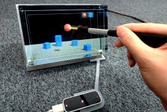
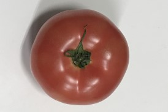
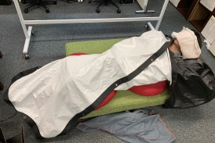
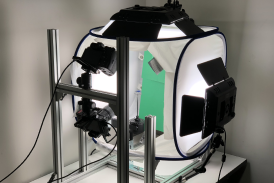

Faculty member
 |
Takashi Ijiri, Ph.D. Principal Investigator web page |
| |
Takashi Ijiri, Ph.D. Principal Investigator web page |
|  | Tomofumi Narita, Project: 3D/4D CT processing, VR/AR. |
| Hiroki Sakai, Project: GAN. |
|  | Kohei Takata, Project: Scene classification system for streams of playing video game. |
|  | Raku Egawa, Project: Pointing interface for light field display. |
|  | Ryo Mukai, Project: Fruit maturity estimation by ML. |
|  | Shunji Muto, Project: Sports Visualization for XR. web page |
|  | Yucheng Qiu, Project: 3D Digitization of Insects. |
| Hiroki Akamatsu, Project: Posture Estimation for VR. |
| Yota Arakawa, Project: Video Recognition. |
| Shota Ueda, Project: Texture Synthesis. |
| Mutsumi Takai, Project: UI for Illustration. |
| Fumika Takashi, Project: Fruit firmness estimation. |
| Yoshihisa Hirakuri, Project: Sports Visualization. |
| Takenori Kitsuta, Project: Illustration Recognition. |
| Kyohei Masuko, Project: 3D naviation in VR. |